Life sheet · wife of John Graham (4th great-uncle); sister-in-law of Nancy
Priscilla Adams Graham
Born about 1831 (1830 to 1831)Documented (range)
Her own sworn age, 41 on 27 Jul 1872 (claim 9849 p410); William, who says he has known her since she was born, gives 41 too (p416). The family book says "c1834"
Died not foundUnresolved
last firm record: her sworn testimony of 27 Jul 1872; her claim was still before Congress in 1876.
- 1872her own home in Jefferson County, "on a farm all the time as a housekeeper"
- 1865her house stood on the line of Wilson's raid (claim petition)
- laternot traced
Daughter of Hillary and Sally (Counts) Adams per the family book p127 (printed, no record seen). Married John Graham, 3 Jul 1856 (family book)
- Married to
- John Graham about 1831 (1830 to 1831) to 1863 (day and place not recorded)
- Parents of John Graham
- William GrahamRebecca Staggs Graham
As written in the records: Priscilla Graham, her X mark (claim 9849) · Mrs. Priscilla Graham (claim 9849, image 00410) · Priscilla Adams (family book p127) · Pricilla (spelling in the family book for her granddaughter Martha Pricilla)
Dates and ages
- Marries John Graham (3 Jul 1856)Family book p127Documented (family book)about, between24 years, 11 months, 6 daysand25 years, 11 months, 5 days
- Son William H. born (7 Apr 1857)Family book p127Documented (family book)about, between25 years, 8 months, 11 daysand26 years, 8 months, 10 days
- Husband conscripted, and dies the same year (1863)Claim 9849 pp410, 415, 417Documented (sworn)about, between32 years, 5 months, 4 daysand33 years, 5 months, 3 days
- Soldiers take a mare, 15 bushels of corn and 200 lb of bacon, $205 (30 Mar 1865)Claim 9849, image 00393 (the schedule)Documented (her claim)about, between33 years, 8 months, 3 daysand34 years, 8 months, 2 days
- Signs her petition by her mark, sworn at Elyton (25 Aug 1871)Claim 9849, image 00396Documentedabout, between40 years, 0 months, 29 daysand41 years, 0 months, 28 days
- Her sworn testimony before John Brown at Elyton (27 Jul 1872)Claim 9849, images 00410 to 00413Documentedabout, between41 years, 0 months, 0 daysand41 years, 11 months, 29 daysAge as recorded: 41
- Commissioners reject the claim: Union loyalty not proved to their satisfactionClaim 9849, image 00429 (the rehearing petition calls it the report of 1873)Documented (year)about, between42 years, 5 months, 4 daysand43 years, 5 months, 3 days
- Affidavits for J. W. Rowe's credibility (28 Mar 1874 and one other)Claim 9849, images 00399 and 00400Documentedabout, between42 years, 8 months, 1 dayand43 years, 8 months, 0 days
- Petition for rehearing referred to the Committee on War Claims (24 Jan 1876)Claim 9849, image 00401Documentedabout, between44 years, 5 months, 28 daysand45 years, 5 months, 27 days
How each age is worked out
- Marries John Graham (3 Jul 1856)latest possible birth 27 Jul 1831 to 3 Jul 1856 is 24 years, 11 months, 6 days; earliest possible birth 28 Jul 1830 to 3 Jul 1856 is 25 years, 11 months, 5 days
- Son William H. born (7 Apr 1857)latest possible birth 27 Jul 1831 to 7 Apr 1857 is 25 years, 8 months, 11 days; earliest possible birth 28 Jul 1830 to 7 Apr 1857 is 26 years, 8 months, 10 days
- Husband conscripted, and dies the same year (1863)latest possible birth 27 Jul 1831 to 31 Dec 1863 is 32 years, 5 months, 4 days; earliest possible birth 28 Jul 1830 to 31 Dec 1863 is 33 years, 5 months, 3 days
- Soldiers take a mare, 15 bushels of corn and 200 lb of bacon, $205 (30 Mar 1865)latest possible birth 27 Jul 1831 to 30 Mar 1865 is 33 years, 8 months, 3 days; earliest possible birth 28 Jul 1830 to 30 Mar 1865 is 34 years, 8 months, 2 days
- Signs her petition by her mark, sworn at Elyton (25 Aug 1871)latest possible birth 27 Jul 1831 to 25 Aug 1871 is 40 years, 0 months, 29 days; earliest possible birth 28 Jul 1830 to 25 Aug 1871 is 41 years, 0 months, 28 days
- Her sworn testimony before John Brown at Elyton (27 Jul 1872)latest possible birth 27 Jul 1831 to 27 Jul 1872 is 41 years, 0 months, 0 days; earliest possible birth 28 Jul 1830 to 27 Jul 1872 is 41 years, 11 months, 29 days
- Commissioners reject the claim: Union loyalty not proved to their satisfactionlatest possible birth 27 Jul 1831 to 31 Dec 1873 is 42 years, 5 months, 4 days; earliest possible birth 28 Jul 1830 to 31 Dec 1873 is 43 years, 5 months, 3 days
- Affidavits for J. W. Rowe's credibility (28 Mar 1874 and one other)latest possible birth 27 Jul 1831 to 28 Mar 1874 is 42 years, 8 months, 1 day; earliest possible birth 28 Jul 1830 to 28 Mar 1874 is 43 years, 8 months, 0 days
- Petition for rehearing referred to the Committee on War Claims (24 Jan 1876)latest possible birth 27 Jul 1831 to 24 Jan 1876 is 44 years, 5 months, 28 days; earliest possible birth 28 Jul 1830 to 24 Jan 1876 is 45 years, 5 months, 27 days
Calendar method: whole years, then whole months, then days, counted from the birth date. Never rounded. Where the record gives only a month or a season, or the birth is known only as a range, both ends are shown.
What the records say
Conscription and death6
- Her claim, number 9849, was for $205: one mare ($150), 15 bushels of corn ($15), 200 pounds of bacon ($40), taken on or about 30 Mar and 1 Apr 1865 by soldiers of Wilson's command. It was rejected; she signed by her X mark.Claim 9849, images 00392 to 00396, 00429Documented
- On her loyalty: "I told my husband that if I were in his place I would lie in the woods till the moss grew on my back before I would go into the rebel army." She also says home guards threatened to burn her house because she was feeding John Beard, who was lying out from the conscript officers, and that she loaned corn to Julian Nail's family while he was in the woods.Claim 9849, images 00411 and 00413Documented (her sworn words)
- Her brothers: "I had three (3) brothers in the Confederate army, all of whom were conscripted ... one of my brothers joined a Union company for the purpose of keeping the rebel cavalry out of the settlement, and was killed by the rebel cavalry." They are not named in the pages read.Claim 9849, images 00411 and 00412Documented (her sworn words)
- Her father-in-law William Graham, and Elizabeth A. Belcher, testified for her, with J. W. Rowe. Julian Nail was meant to speak for her loyalty but "could not be procured"; William was put in his place.Claim 9849, images 00396, 00410, 00416Documented
- Her attorney argued that Nancy Ann Graham's claim 7100, "similar in almost every respect and corroborated by the same witnesses, with one exception, is allowed," and that the two were widows of brothers.Claim 9849, images 00397 and 00398Documented
- Penelope E. Graham, aged 26, testified in the added evidence as William's daughter-in-law; she names the property taken from "William Graham's premises." Her husband is not named in the pages read (Henry Harrison Graham is the likely one but this is not stated).Claim 9849 / 7099, images 00477 to 00480Documented (relationship); husband Unresolved
Children (family book p127)
William H. (7 Apr 1857 to 30 May 1906 (family book)), Possibly a daughter, wife of J. R. Jones (see John's sheet)
Open questions and missing documents
- Her parents and her brothers Hillary Adams household in 1850; marriage record 3 Jul 1856 (Jefferson County)
- Whether she is the Rissa Adams of the family book or her sister Family book p133 against p127
- When and where she died, and her later life Confederate widow's pension (ADAH); 1880 and 1900 censuses
- The 1860 census, Jefferson Co. p656 family 82 Ancestry
- The outcome of the 1876 referral Congressional reports (Barred and disallowed claims)
More from the family
Where William's claim touches hers2
- William was a witness in her claim, in place of Julian Nail, who "could not be procured." He says he went with John when John was carried to the conscript camp at Talladega, and that he is a Union man.Claim 9849, images 00416 to 00418, as read in the machine transcript (not yet checked against the image)Documented
- William's own claim (7099) says the soldiers took his horses, bacon and corn while he was away piloting the command about seven miles. Priscilla's petition names a different date, on or about 30 Mar and 1 Apr 1865, for the soldiers' taking from her.Claim 7099 images 00437 and 00456 to 00457; claim 9849Unresolved
Documents
Click an image to read it here. Scans are web copies; the originals are in the family folder.
Claims39
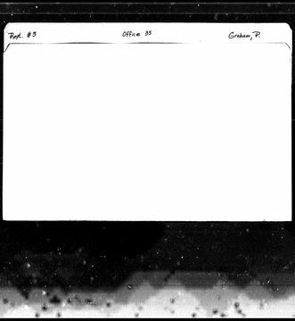
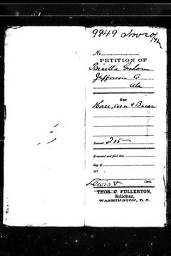
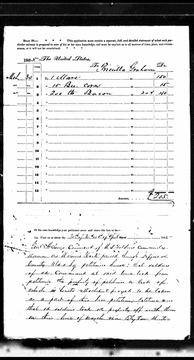
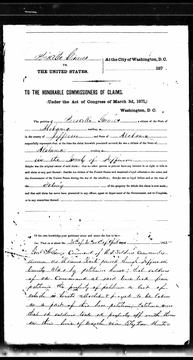
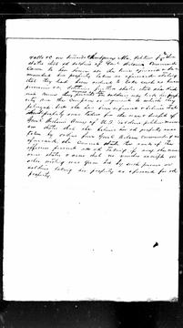
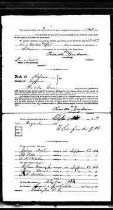
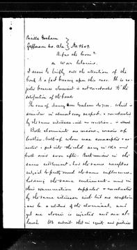
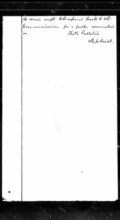
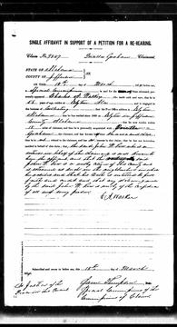
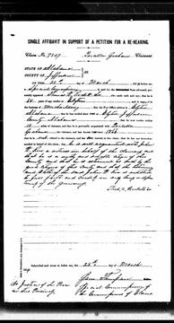
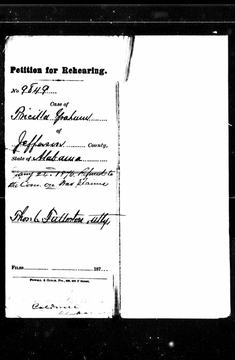
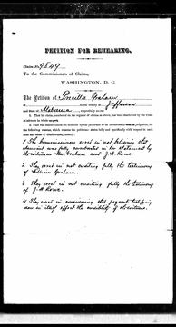
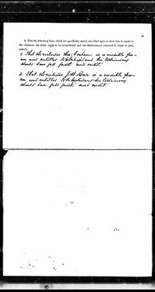
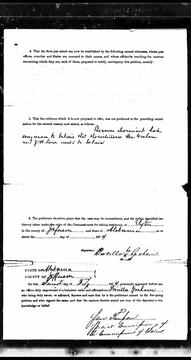
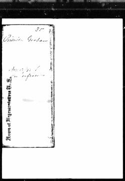
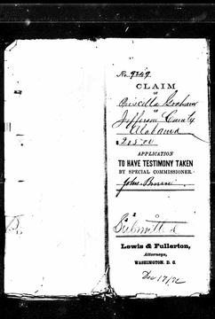
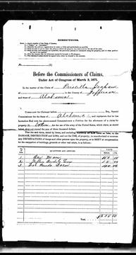
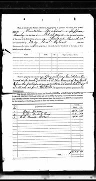
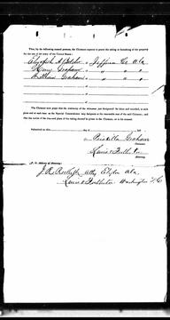
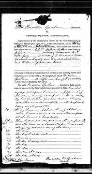
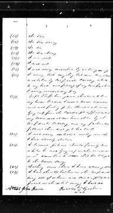
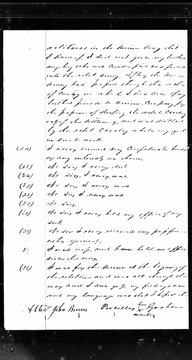
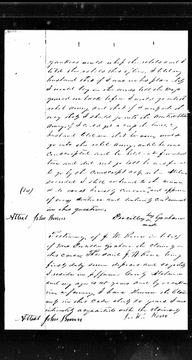
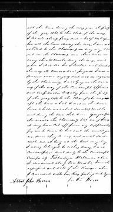
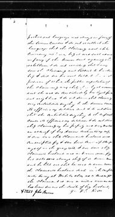
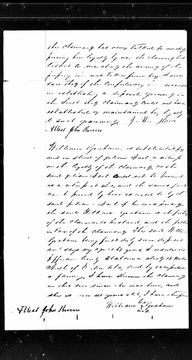
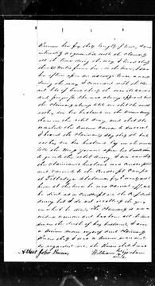
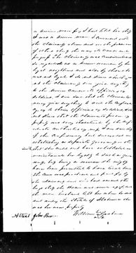
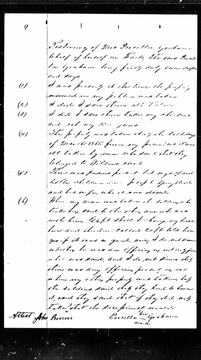
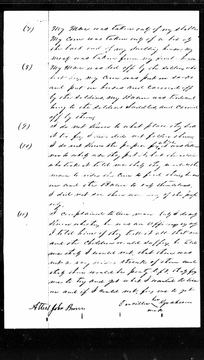
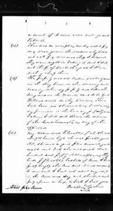
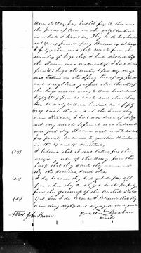
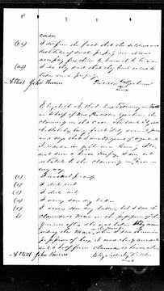
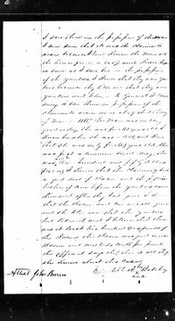
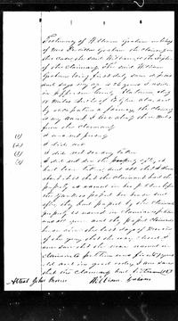
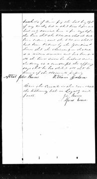
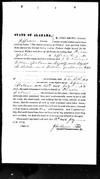
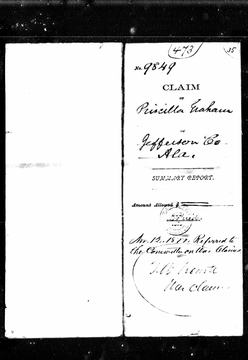
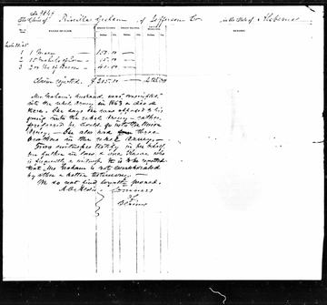


The years around this life
How to read the turnings, and where they come from
Two American authors, William Strauss and Neil Howe, proposed that American history moves in cycles of about 80 to 85 years. Each cycle has four "turnings" of about 21 years, and people born in the same stretch form a "generation" with one of four archetypes. The idea is in their books Generations (1991) and The Fourth Turning (1997).
- High. Institutions are strong and individualism is weak.
- Awakening. Institutions are attacked and individualism rises.
- Unraveling. Institutions are weak and distrusted, and individualism is strong.
- Crisis. Institutions are rebuilt and individualism declines.
- Prophet. Born in a High, comes of age in an Awakening.
- Nomad. Born in an Awakening, comes of age in an Unraveling.
- Hero. Born in an Unraveling, comes of age in a Crisis.
- Artist. Born in a Crisis, comes of age in a High.
What it is not. It is a theory, not a record and not a measurement. Many historians do not accept it as science. Critics say it is too vague to be proven wrong, and that it fits a pattern onto events after the fact. It was built on American history from 1584, with an Anglo-American focus. The authors say similar cycles show up in other developed countries; I have not checked that, and it may not fit histories outside the West. The turning dates and the generation names on these pages are theirs. They say nothing about any one person in the family, and nothing on this page claims a person had a trait because of the year they were born.
Why it is here. Grouping the years helps me see a life next to its time. The names are theirs, and I like them.
Read more: the books, at Open Library (the primary source) · Strauss–Howe generational theory, on Wikipedia, which also lists the criticism with its sources.
Transcendental Awakening, 1822 to 1844
In their own records
- Nothing dated in these years on this sheet.
History in these years (period context, not about this person)
- 1836 to 1838 Recession of 1836 to 1838 (the Panic of 1837) national; Wikipedia, List of recessions in the United States (no month given)
Conjunctions and oppositions in these years (a clockface, not a cause)
- Saturn-Pluto opposition, exact once: 1834-09-30 (12° Libra / 12° Aries)
Unraveling, 1844 to 1860
In their own records
- 1856-07-03 Marries John Graham (3 Jul 1856) Family book p127Documented (family book)
- 1857-04-07 Son William H. born (7 Apr 1857) Family book p127Documented (family book)
History in these years (period context, not about this person)
- 1844-05-24 Morse's Washington to Baltimore telegraph line opens national; Wikipedia, Samuel Morse
- 1854 to 1862 Graduation Act: unsold federal land as low as 12½ cents an acre national; NPS, Ozark National Scenic Riverways Historic Resource Study, ch. 4 ("eight-year life of the statute")
- 1857-06 to 1858-12 Panic of 1857 (recession) national; Wikipedia, List of recessions
Conjunctions and oppositions in these years (a clockface, not a cause)
- Saturn-Neptune conjunction, exact 3 times: 1846-04-04 (27° Aquarius / 27° Aquarius); 1846-09-05 (26° Aquarius / 26° Aquarius); 1846-12-11 (25° Aquarius / 25° Aquarius)
- Uranus-Pluto conjunction, exact 3 times: 1850-06-26 (29° Aries / 29° Aries); 1850-09-25 (29° Aries / 29° Aries); 1851-03-23 (28° Aries / 28° Aries)
- Saturn-Pluto conjunction, exact 3 times: 1851-06-06 (0° Taurus / 0° Taurus); 1851-11-11 (29° Aries / 29° Aries); 1852-02-10 (28° Aries / 28° Aries)
- Saturn-Uranus conjunction, exact once: 1852-03-15 (2° Taurus / 2° Taurus)
Civil War Crisis, 1860 to 1865
In their own records
- 1863-12-31 Husband conscripted, and dies the same year (1863) Claim 9849 pp410, 415, 417Documented (sworn)
History in these years (period context, not about this person)
- 1861-01-11 Alabama adopts its Ordinance of Secession, 61 to 39 alabama; Encyclopedia of Alabama, Alabama Constitution of 1861 (the article misprints 1865 once)
- 1861-04-12 to 1861-04-13 Fort Sumter national; Wikipedia, Battle of Fort Sumter
- 1862-04-16 First Confederate Conscription Act: white men 18 to 35 national; Wikipedia, Confederate Conscription Acts 1862-1864
- 1862-09-27 Conscription age raised to 45 national; Wikipedia, Confederate Conscription Acts
- 1863-01-01 Emancipation Proclamation national; Wikipedia, Emancipation Proclamation
- 1863-11-24 to 1863-11-25 Lookout Mountain and Missionary Ridge; Union holds Chattanooga afterward national; Wikipedia, Battles for Chattanooga
- 1864-02-17 Conscription widened to white men 17 to 50 national; Wikipedia, Confederate Conscription Acts
Conjunctions and oppositions in these years (a clockface, not a cause)
- ✦ Saturn-Neptune opposition, exact 3 times: 1862-11-05 (1° Libra / 1° Aries); 1863-03-11 (3° Libra / 3° Aries); 1863-09-05 (5° Libra / 5° Aries)within 1 year of: 1863-01-01 Emancipation Proclamation. Dates side by side, not a cause.
Reconstruction and Gilded Age High, 1865 to 1886
In their own records
- 1865-03-30 Soldiers take a mare, 15 bushels of corn and 200 lb of bacon, $205 (30 Mar 1865) Claim 9849, image 00393 (the schedule)Documented (her claim)
- 1871-08-25 Signs her petition by her mark, sworn at Elyton (25 Aug 1871) Claim 9849, image 00396Documented
- 1872-07-27 Her sworn testimony before John Brown at Elyton (27 Jul 1872) Claim 9849, images 00410 to 00413Documented
- 1873-12-31 Commissioners reject the claim: Union loyalty not proved to their satisfaction Claim 9849, image 00429 (the rehearing petition calls it the report of 1873)Documented (year)
- 1874-03-28 Affidavits for J. W. Rowe's credibility (28 Mar 1874 and one other) Claim 9849, images 00399 and 00400Documented
- 1876-01-24 Petition for rehearing referred to the Committee on War Claims (24 Jan 1876) Claim 9849, image 00401Documented
In the family's records
- 1865-03-28 Wilson's troops take Nancy's corn, bacon, fodder, oats, mare and mule ("on or about the 28th day of March 1865") Claim 7100 pp22-24Documented
History in these years (period context, not about this person)
- 1865-03-22 to 1865-04-20 Wilson's Raid through Alabama and Georgia alabama; Wikipedia, Wilson's Raid
- 1865-03-28 Skirmish at Elyton; Oxmoor and Irondale furnaces destroyed local; Wikipedia, Wilson's Raid
- 1865-12-06 Thirteenth Amendment ratified (Alabama ratified 2 Dec 1865) national; Wikipedia, Thirteenth Amendment
- 1866-06-21 to 1876-06 Southern Homestead Act (Alabama among five states); repealed June 1876 national; Wikipedia, Southern Homestead Act of 1866
- 1870-12-18 Elyton Land Company organized local; Encyclopedia of Alabama, Birmingham
- 1871 to 1880 Southern Claims Commission (claims filed 1871 to 1873) national; Wikipedia, Southern Claims Commission
- 1871-12-19 Birmingham chartered, at the crossing of two rail lines local; Encyclopedia of Alabama, Birmingham
Conjunctions and oppositions in these years (a clockface, not a cause)
- ✦ Saturn-Pluto opposition, exact once: 1866-11-01 (14° Scorpio / 14° Taurus)within 1 year of: 1865-12-06 Thirteenth Amendment ratified (Alabama ratified 2 Dec 1865). Dates side by side, not a cause.
☌ conjunction, ☍ opposition (larger), □ square. Ticks under the transits are sign ingresses (dashed: retrograde back-entry). A gold ring on the bar is a birth, marriage or death within 1 year of a ☌ or ☍. A gold band is a ☌ or ☍ (all its exact passes) within 1 year of a history item. Dates side by side, not a cause. Astrology is shown as a clockface. Hover for detail; the list below has the same items. History dots: national, Alabama, local; black squares are events in our own records.
List view: 26 items (history, family records, and the conjunctions and oppositions only; ✦ marks a conjunction or opposition within 1 year of a history item)
| 1834-09-30 | Saturn-Pluto opposition, exact once: 1834-09-30 (12° Libra / 12° Aries) | computed (Swiss Ephemeris), transits CSV |
| 1836 to 1838 | Recession of 1836 to 1838 (the Panic of 1837) | national; Wikipedia, List of recessions in the United States (no month given) |
| 1844-05-24 | Morse's Washington to Baltimore telegraph line opens | national; Wikipedia, Samuel Morse |
| 1846-04-04 | Saturn-Neptune conjunction, exact 3 times: 1846-04-04 (27° Aquarius / 27° Aquarius); 1846-09-05 (26° Aquarius / 26° Aquarius); 1846-12-11 (25° Aquarius / 25° Aquarius) | computed (Swiss Ephemeris), transits CSV |
| 1850-06-26 | Uranus-Pluto conjunction, exact 3 times: 1850-06-26 (29° Aries / 29° Aries); 1850-09-25 (29° Aries / 29° Aries); 1851-03-23 (28° Aries / 28° Aries) | computed (Swiss Ephemeris), transits CSV |
| 1851-06-06 | Saturn-Pluto conjunction, exact 3 times: 1851-06-06 (0° Taurus / 0° Taurus); 1851-11-11 (29° Aries / 29° Aries); 1852-02-10 (28° Aries / 28° Aries) | computed (Swiss Ephemeris), transits CSV |
| 1852-03-15 | Saturn-Uranus conjunction, exact once: 1852-03-15 (2° Taurus / 2° Taurus) | computed (Swiss Ephemeris), transits CSV |
| 1854 to 1862 | Graduation Act: unsold federal land as low as 12½ cents an acre | national; NPS, Ozark National Scenic Riverways Historic Resource Study, ch. 4 ("eight-year life of the statute") |
| 1857-06 to 1858-12 | Panic of 1857 (recession) | national; Wikipedia, List of recessions |
| 1861-01-11 | Alabama adopts its Ordinance of Secession, 61 to 39 | alabama; Encyclopedia of Alabama, Alabama Constitution of 1861 (the article misprints 1865 once) |
| 1861-04-12 to 1861-04-13 | Fort Sumter | national; Wikipedia, Battle of Fort Sumter |
| 1862-04-16 | First Confederate Conscription Act: white men 18 to 35 | national; Wikipedia, Confederate Conscription Acts 1862-1864 |
| 1862-09-27 | Conscription age raised to 45 | national; Wikipedia, Confederate Conscription Acts |
| 1862-11-05 | ✦ Saturn-Neptune opposition, exact 3 times: 1862-11-05 (1° Libra / 1° Aries); 1863-03-11 (3° Libra / 3° Aries); 1863-09-05 (5° Libra / 5° Aries) history within 1 year: 1863-01-01 Emancipation Proclamation | computed (Swiss Ephemeris), transits CSV |
| 1863-01-01 | Emancipation Proclamation | national; Wikipedia, Emancipation Proclamation |
| 1863-11-24 to 1863-11-25 | Lookout Mountain and Missionary Ridge; Union holds Chattanooga afterward | national; Wikipedia, Battles for Chattanooga |
| 1864-02-17 | Conscription widened to white men 17 to 50 | national; Wikipedia, Confederate Conscription Acts |
| 1865-03-22 to 1865-04-20 | Wilson's Raid through Alabama and Georgia | alabama; Wikipedia, Wilson's Raid |
| 1865-03-28 | Skirmish at Elyton; Oxmoor and Irondale furnaces destroyed | local; Wikipedia, Wilson's Raid |
| 1865-03-28 | Wilson's troops take Nancy's corn, bacon, fodder, oats, mare and mule ("on or about the 28th day of March 1865") | family record; Claim 7100 pp22-24 |
| 1865-12-06 | Thirteenth Amendment ratified (Alabama ratified 2 Dec 1865) | national; Wikipedia, Thirteenth Amendment |
| 1866-06-21 to 1876-06 | Southern Homestead Act (Alabama among five states); repealed June 1876 | national; Wikipedia, Southern Homestead Act of 1866 |
| 1866-11-01 | ✦ Saturn-Pluto opposition, exact once: 1866-11-01 (14° Scorpio / 14° Taurus) history within 1 year: 1865-12-06 Thirteenth Amendment ratified (Alabama ratified 2 Dec 1865) | computed (Swiss Ephemeris), transits CSV |
| 1870-12-18 | Elyton Land Company organized | local; Encyclopedia of Alabama, Birmingham |
| 1871 to 1880 | Southern Claims Commission (claims filed 1871 to 1873) | national; Wikipedia, Southern Claims Commission |
| 1871-12-19 | Birmingham chartered, at the crossing of two rail lines | local; Encyclopedia of Alabama, Birmingham |
Period context, not about this person
General history of the time, from published sources. Nothing here says this person had or did it.
- Wilson's Raid crossed central Alabama in March and April 1865 and took Selma on 2 April and Montgomery on 12 April. Wikipedia, Wilson's Raidcontext
- The Southern Claims Commission, created 3 March 1871, paid only Southerners who could prove loyalty to the Union; most claims were disallowed. Wikipedia, Southern Claims Commissioncontext